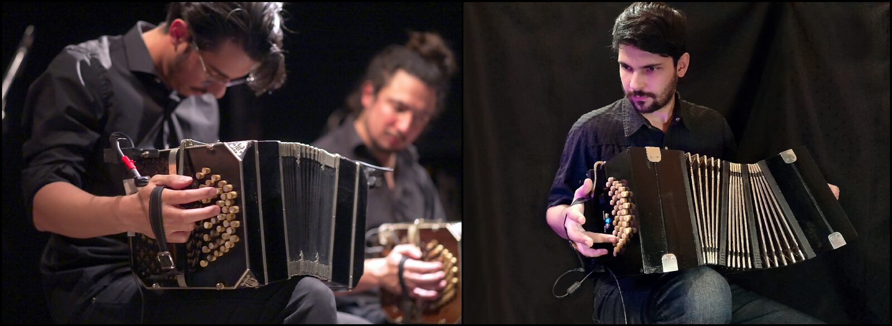
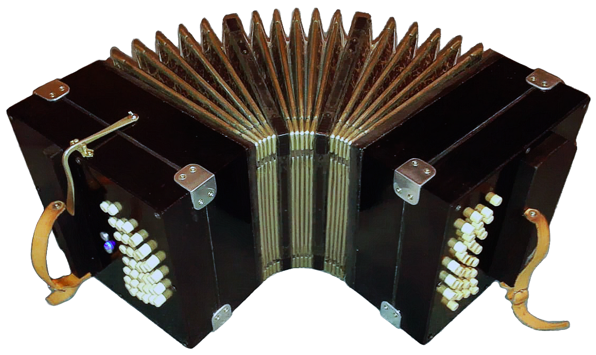
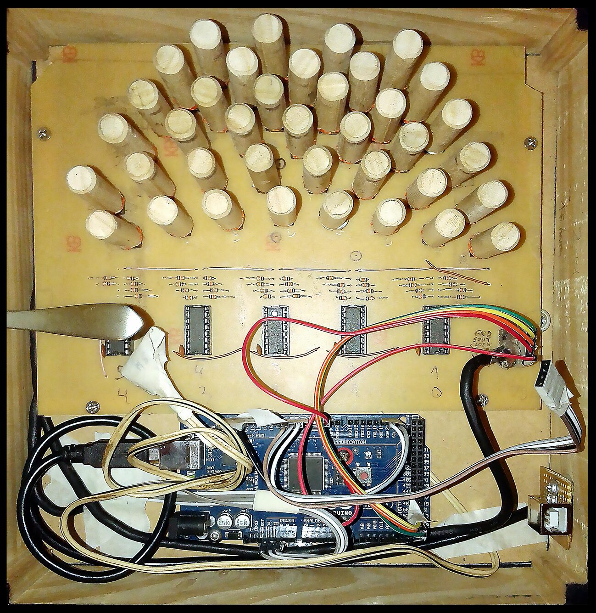
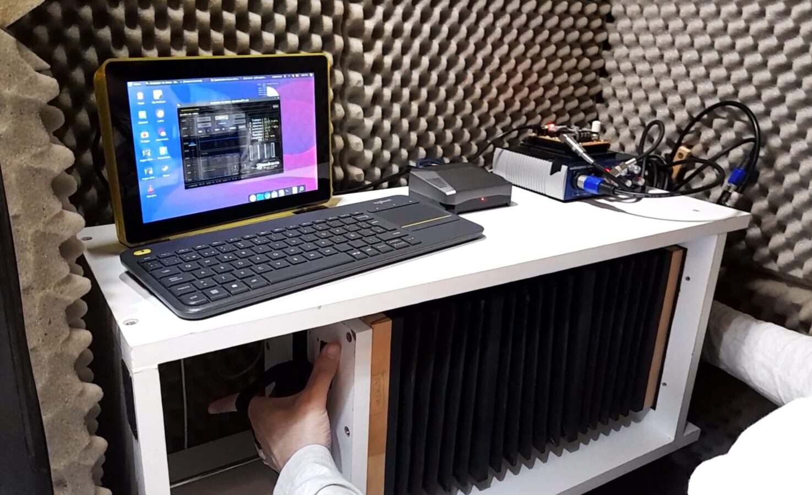
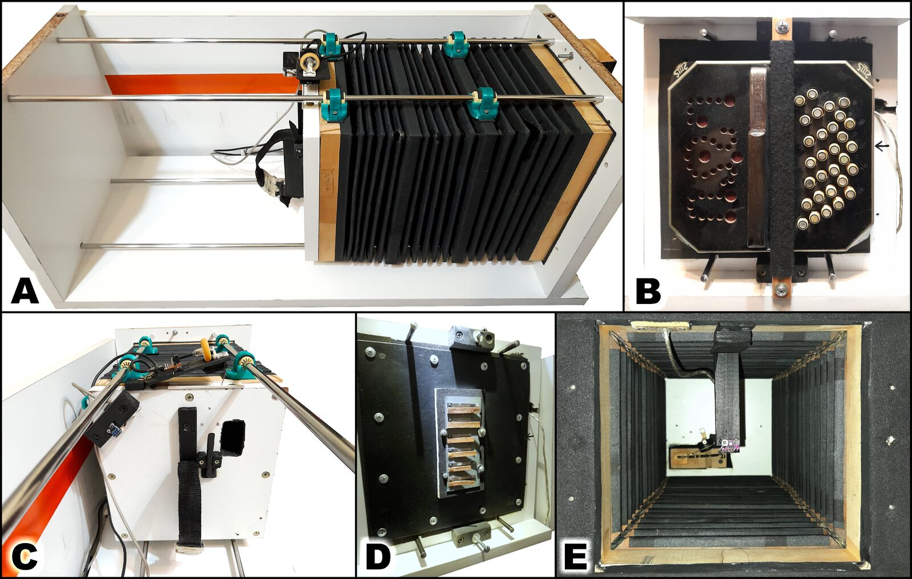

Bandoneon 2.0: an interdisciplinary project for research and development of electronic bandoneons in Argentina
Abstract
In this article we present Bandoneón 2.0, an interdisciplinary project whose main objective is to produce electronic bandoneons in Argentina. The current prices of bandoneons and the scarcity of manufacturers are endangering the possibility of access for the new generations to one of the most emblematic instruments of the culture of this country. Therefore, we aim to create an expressive and accessible electronic bandoneon that can be used in recreational, academic and professional contexts, providing an inclusive response to the current sociocultural demand. The project also involves research on instrument acoustics and the development of specialized software and hardware tools.
This paper summarizes our project and its evolution, as well as a brief history of the bandoneon and the problems faced by today's local musicians. We also describe our first prototype, “Alfa”, and its outcomes, the scientific research we carry out using an Integral Measurement System we developed, and some preliminary results. Finally, we comment on the next steps for the future of the project, and we discuss some points that we have collected from our perspective as NIME developers in our country.
Author Keywords
Bandoneon, electronic, free-reed, Tango
CCS Concepts
•Applied computing → Sound and music computing; Performing arts; •Human-centered computing → User interface design
Introduction
The bandoneon (Figure 1) is a bellows-driven free-reed aerophone, originated in Germany around 1830 [1]. It has a square-section bellows with its ends closed by two keyboards. When expanding or contracting it, a difference in air pressure is produced, and if one or more keys are depressed, the air will flow through the corresponding reeds making them oscillate. It’s built in such a way that a single key produces two different notes depending on the direction of airflow. Each note also features two reeds (fundamental plus octave), which produces its distinctive timbre.


Figure 1. ELA brand acoustic bandoneon (left), and our prototype “Alfa” (right).
Since its arrival to the Río de la Plata basin by the mid and late 19th century, it has become immensely popular in this region. Almost inseparably tied to the Tango, it represents a cultural symbol and heritage of Argentina and Uruguay. This synergy between instrument and genre developed from the urban lower classes of Buenos Aires and Montevideo, a rich cultural crucible as described by the UNESCO in its declaration of Tango as a Cultural and Intangible Heritage of Humanity:
“Among this mix of European immigrants to the region, descendents of African slaves and the natives of the region known as criollos, a wide range of customs, beliefs and rituals were merged and transformed into a distinctive cultural identity.”1
The bandoneon, as is Tango itself, is extremely expressive and very gestural, a nuanced but also very physically intensive instrument: the player gives their whole body to the performance, which makes it a true spectacle to watch.
Unfortunately, due to circumstances like the cessation of mass manufacturing and high market prices, the bandoneon is seriously endangered nowadays. On the other hand, it has received little to no attention from the technological revolutions of the 20th and 21st century, nor has the academic community conducted much research on its acoustical or physical properties, both elements that could help revitalize the instrument. However, as we describe later, there has been some recent efforts to revert this situation which, despite having mixed results, were met with great expectation: proactively protecting the heritage of a region is not only fundamental to preserve its roots and identity, but also to guarantee the same possibility of accessing culture and knowledge for future generations.
To address this situation, we have created Bandoneón 2.0: an interdisciplinary project whose main objective is to produce electronic bandoneons in Argentina. We seek to develop an expressive instrument that can be performed in recreational, academic, or professional contexts, drawing from local experiences and perspectives, but also aided by a strong scientific research. Thus, we aim to provide an inclusive response to the sociocultural request for a more affordable bandoneon, and also to address its inherent need of adaptation to the modern technological era.
History of the Bandoneon
The bandoneon evolved from the European accordions and concertinas [2] of the early 19th century, and was initially manufactured by German luthiers such as Carl Friedrich Uhlig, Carl Friedrich Zimmermann, and Heinrich Band, who experimented with different innovations, following the requests of the musicians of the time. Most scholars agree that its name comes from the joining of Heinrich Band’s last name and the word “accordion” [3] [4]. Following it’s initial success, several European factories were established from the mid 19th to the early 20th centuries, mass producing and exporting the instrument worldwide. Among them, stood out the Ernst Louis Arnold Bandonion und Konzertina Fabrik (ELA), Alfred Arnold bandonion und Konzertina Fabrik (AA), and Meinel & Herold.
In this context, the bandoneon arrived in Argentina and Uruguay, likely brought by European immigrants of the time [5]. Thus, it was adopted by local musicians, and progressively became a symbol and an identitarian feature of the rioplatense2 Tango, also making its way into other regional folk genres like chamamé, zamba, pasodoble, polka, and even jazz, rock and pop. Regarding its popularity, Ástor Piazzolla (1921-1992) stated:
“In Argentina about 25,000 AA bandoneons were sold” [6]
and Kurt Müller, a former AA factory worker, said:
“[...] between 1920 and 1925 [...] hundreds of bandoneons were shipped to Argentina every month”. [4]
However, after World War II, the mass production of bandoneons decreased dramatically, until it stopped a few years later. The AA factory was expropriated in 1948, and its facilities were repurposed for the construction of automobile injection pumps. In 1950, the Arno Arnold Bandonion Fabrik was established in Obertshausen, Germany, but closed its doors in 1971. Since then, manufacturing has been reduced to the activity of a few luthiers around the world [7], who can only produce a handful of units per year, usually with their own hands.
As a result, most players nowadays acquire used instruments, some over 100 years old. Current prices for these instruments range between €1,200 and €4,500, while a new one can be sold from €4,900 up to €10,000. To put this in perspective, in Argentina an AA brand bandoneon for semi-professional use may cost more than 20 minimum wages (as of October 20213), while a similar-tier classical guitar can be purchased for about 0.5 minimum wages. These prices make accessing the bandoneon extremely difficult for new generations who want to learn or even try it for the first time. According to a survey by the Instituto Nacional de la Música4 (INAMU, Argentina), bandoneon players represented only 0.8% of local instrumentalists in 20215. Adding to this, many bandoneons were sold as collectibles to foreign buyers over the last decades, which worsened its local shortage. This produced the approval in 2009 of the Law 26,5316, which forbids the departure of old bandoneons from national territory, unless for use in a performance.
Bandoneón 2.0 project
Considering this situation, we created Bandoneón 2.0 in 2018 at the Universidad Nacional de Quilmes (UNQ, Argentina), an interdisciplinary project with the founding objective to locally produce electronic bandoneons. We gathered professional musicians and scientists from fields such as physics, biology, engineering, industrial design and music technology, all sharing an active passion for music, acoustics, and technology, and bringing their particular expertise to create a modern electronic representative of the bandoneon. In a way, we can make an analogy with the relationship between the acoustic and digital pianos: we intend to create an instrument capable of transcending and modernizing aspects of the traditional bandoneon, expanding its musical and expressive possibilities, but at the same time capable of behaving and sounding like the acoustic instrument when required. We believe the project could bring other benefits such as: allowing for a silent study, facilitate transcription of musical works, offer modern pedagogical features (like illuminatable keys), control non-musical devices in real time, scaling/reshaping of the instrument to make it more accessible for persons with different needs. In the future, we would like to create a digital museum-repository of different historical and iconic bandoneons, so that their sound can be preserved and readily accessible to everyone. In order to achieve our goals, we deem it necessary to first work in direct contact with the local musician, and to add the support of scientific research, which may help us to learn and emulate the peculiarities of this rich instrument.
Although, nowadays, building an interface based on a series of buttons and microcontrollers is easily achievable, we believe that, in order for it to be accepted and adopted by the community, we need to go beyond this simple model. An in-depth study of the peculiarities of the bandoneon becomes necessary. There are some academic works on the acoustics of other free-reed instruments [8][9][10][11][12], but the bandoneon did not receive a similar treatment, as most scholars tend to focus on its cultural, musical or historical value. For this reason, we consider that the best way to approach our project is from an interdisciplinary perspective, which explores the different facets of the instrument through an exchange between different points of view, so that we can not only learn more and properly emulate it, but also to make a relevant contribution to the academic field.
Related works
One of the earliest attempts to bring modern technology to the bandoneon is the work of David Tudor in his “Bandoneon! (a combine)” from 1966 [13][14], where the sound of the instrument was used as the input of a complex sound and visual system. Over the last decades there has been an increasing interest in the topic, fueled by the development of the Electronic Tango genre in the late 1990s [15]. The more recent "Bandoneón Pichuco"7 project of the Universidad Nacional de Lanús (UNLa, Argentina) sought to use modern manufacturing techniques like 3D printing to create low-cost acoustic bandoneons, and even produced some prototypes since 2013. Nevertheless, being an acoustic instrument, they still require reeds, which are one of the most expensive components of the bandoneon.
The recent growth of the DIY electronics community, fueled by the wide availability of technologies such as Arduino, has enabled the apparition of the first attempts on building an electronic bandoneon. In 2013, the Argentinians Juan Pablo Fredes (luthier) and Carlos Amoresano (engineer) created perhaps the first MIDI bandoneon ever8, even setting a precedent for our interdisciplinary approach, but they’ve produced no more instruments since then. More recently, and parallel to the creation of Bandoneón 2.0, Federico Fraysse, an engineer from Bahía Blanca (Argentina) presented another MIDI bandoneon prototype, which featured a fully redesigned mechanical keyboard. His instrument won a prize9 and has received the attention of the local press10. These two examples were built inside actual bandoneon bodies, incorporating the appropriate electronics. The Bandonberry [16], made as a thesis by the Uruguayans José Bentancour, Franco Toscano and Rodrigo Patiño, is an example of a fully 3D printed MIDI bandoneon, which incorporates a Raspberry PI. This is also the only academics related work besides our own. In 2021 Mariano Godoy and Sebastián Barbui, artists from Argentina, developed a MIDI controller called Bandólica11, featuring keys arranged as either a right or left-hand bandoneon keyboard, intended for practice purposes. All of these initiatives are mainly conceived as MIDI controllers, without specifically designed synthesizers associated with them.
Closely related to the bandoneon, in 2021 a group of researchers and musicians from Pernambuco (Brazil) created an electronic concertina12, which features a novel system to substitute the ubiquitous bellows for a simpler device. Also, the Roland company produces the V-Accordion13 series of digital accordions. Another closely related interface is the PushPull [17], an open source instrument from the 3DMIN14 project, featuring an acoustically sensed bellows. The NIME community has examples of interfaces with bandoneon-like expression systems, such as the Accordiatron [18] or the Sponge [19], and it is even possible to draw paradigmatic parallels with several works based on the traditional culture of different regions of the world, such as the Slowqin [20] (based on the chinese Guqin), the Andean Khipu based NIME [21][22], the Electronic Sitar Controller [23], the Gamelan Elektrika [24], the Tibetan Singing Bowl Controller HyperPuja [25], to name a few.
These cases show a growing interest in the subject, although, of the bandoneon-like interfaces, only the Bandólica is currently available for sale to the public. The socio-economic context of our region make it very difficult to carry on projects beyond the development of “one-off” prototypes. For this reason, a fundamental objective of our project is to seek for academic and economic support from both local state institutions and private funding sources.
Project development
Since its inception, the project has attained some achievements that we consider essential for its realization. In 2018, the first author of this paper obtained a doctoral scholarship from the Consejo Nacional de Investigaciones Científicas y Técnicas (CONICET, Argentina), specifically aimed to research and develop electronic bandoneons, which represented a decisive step forward for us. In Argentina, the socio-economic context of recent decades makes it difficult to dedicate resources to this kind of project, and funding is hard to come by (especially before having results), so it becomes fundamental to find institutional support, particularly state related.
Also in 2018, we created our first prototype named “Alfa”, and the following year the project obtained a grant from the UNQ, which allowed us to develop an Integral Measurement System with which we carry out acoustic studies on bandoneons and other instruments. Alfa and this system are described in the following sections. In 2021, we began conversations with representatives of the Ministerio de Ciencia y Tecnología (MinCyT, Argentina), who were interested in supporting the project, and we also received a subsidy from the Ministerio de Cultura (Argentina), which will allow us to develop our next prototype, “Ástor”, in 2022.
Alfa: our first prototype
In 2018 we developed our first electronic bandoneon prototype nicknamed “Alfa” (Figure 2, Video 1), in reference to the alpha versions of software. We intended to test initial concepts and technologies, laying a material base on which to carry out future research, obtain feedback from musicians (and non musicians), and increase the project’s public reach in order to obtain new sources of financing. In simple terms, Alfa was developed as a USB-MIDI controller, with 71 keys in the same layout as a traditional acoustic bandoneon. It features a bellows with an air pressure sensor inside, which enables it to respond to the dynamic expression of the performer.


Figure 2. Detail of the “Alfa” prototype.
Video 1. A bandoneonist playing “Mano a Mano” (by Gardel, Razzano, Flores), using “Alfa”.
(https://www.youtube.com/watch?v=7Kre5POqwP4)
Technical description
Alfa’s external appearance and dimensions are similar to those of any standard AA or ELA brand model. Most of its structure is made out of pinewood and MDF15, and the bellows was reclaimed from a discarded bandoneon. The exposed wooden parts were dyed black and coated with transparent polyurethane, to improve its durability and aesthetics.
In order to produce the proper compression-decompression inside the bellows, a hermetic seal was created using flat MDF boards, acting as lids to cover its ends, which in turn, provide the space and support to house the electronic and mechanical components of the instrument. Since the bandoneon is inflated and deflated when played, a small hole was made on one of the lid boards to allow for a limited air flow from and into the bellows. This allows the passage of air at all times, regardless of whether the user presses any keys or not, a point which is discussed later.
The sound of the bandoneon is produced when air is allowed to flow through its various reeds, making them oscillate. To emulate this principle, and based on our previous experiences with other wind NIMEs [26], we used a Bosch BMP28016 sensor to monitor the instantaneous air pressure inside the bellows (at 100 Hz sample rate). This way, the instrument knows: if any notes should sound, which ones (according to the keys activated) and with what intensity (according to the magnitude of the pressure change). Even so, it can inferr if the instrument is being expanded or contracted, a mandatory feature since the bandoneon usually produces two different notes with the same key, depending on the direction of airflow. Thus, the relevant MIDI messages are produced to control the notes and dynamics of any associated synthesizer. Finally, a lever-operated air valve was added to the body of the instrument, which allows the user to expand or contract the bellows very quickly, without being forced to play notes. This is a common feature in bellows aerophones, and players use it to repeatedly phrase in one direction (i.e. only expanding, or only contracting), for technical or expressive reasons. Although this design is a broad simplification of the complex physical phenomenons governing the bandoneon, it is sensitive enough for the context of an initial prototype.
The keyboards were arranged according to the system known as “Rheinische Tonlage 38/33” [1], since it is (by far) the most popular nowadays. However, it is possible to modify the note mappings for each key, in order to have an easier or custom-made note layout. A web application17 is currently under development to help with this task. The keys themselves are an array of silicone tact switches, attached to round pieces of wood which mimic the keys of a bandoneon (Figure 3). We found that this particular kind of switches are less prone to electrical bouncing, and provide a smoother sensation to the touch than the more common “clicky” ones.


Figure 3. Internals of the right hand keyboard of “Alfa”.
On the logics side, we used an Arduino microcontroller to centralize sensor and key monitoring. Given the need to monitor the status of 71 keys, it was necessary to expand the number of digital inputs of the Arduino by using 10 chained 74hc165 8-bit shift registers (5 for each keyboard). This, along with some pull-up resistors and bypass capacitors, allows the 71 silicon tact switches to be read using just 3 digital pins on the Arduino. Additionally, the instrument features two more buttons, assigned to the functions “panic+reset” and “mode change”. The latter toggles the MIDI CC message type for dynamics (CC7-Volume, CC11-Expression) and the note layout to traditional or custom. A potentiometer is used to fine-tune the dynamics mapping curve (air pressure to MIDI Volume/Expression), by varying the exponent in an exponential formula. There is also a blue LED to provide visual feedback of the instrument's current state.
The Arduino regularly monitors the pressure value reported by the BMP280. If this value shifts from its resting position (set during startup/reboot), it means that the user has disturbed the bellows in some way, and if there are any keys pressed, the system produces the corresponding MIDI notes. This design supports full polyphony of all 71 keys. Then, MIDI-CC messages are regularly sent to control the volume of the active notes. If the user changes the pressed keys or the pressure inside the bellows, the notes are modified accordingly. If said pressure returns to its resting value, all notes are terminated. In addition to flashing with changes in status, the blue LED changes its intensity according to the pressure recorded. Although this feature was originally implemented for debugging purposes, it was left for its aesthetic contribution.
Outcomes
On November 21, 2018, Alfa was presented in public at the award event of the 2nd edition of the Premio a la Innovación en Artes y Tecnología of the UNQ, where it obtained the First Place in the Innovation in Transfer, Art and Technology category. During this event, the Bandoneón 2.0 project was presented to the University audience, and a live performance was made with Alfa, using different synthesizers with bandoneon and other acoustic instrument timbres, as well as more experimental sounds to demonstrate its potential. In addition to a monetary prize, the project obtained the institutional support of the Secretaria de Innovación y Transferencia Tecnológica (UNQ).
Alfa was also presented at the Audio Engineering Society (AES) Argentina Expo 2019, at Centro Cultural San Martín (Buenos Aires, Argentina) on June 21, 22 and 23, 2019. There was a general presentation of the project, a series of mini-performances, and the prototype was casually tested by the attending public. Several bandoneonists also attended, who gave their opinions about Alfa, with a good reception in general. At the end of the same year, the project was presented in the city of San Carlos (Brazil), during the XXVII Jornadas de Jovens Pesquisadores of the AUGM18, presenting a poster and an article about Alfa [27].
During the COVID-19 lockdown in 2020, a virtual collaboration was carried out with several artists, in which the song “Back Pocket” (by Vulfpeck) was recorded (Video 2). For that occasion, Alfa was used (together with an acoustic bandoneon) to perform chords and arpeggios, and we explored the potential of customizing the note layout on its keyboard, using a “mostly” diatonic system in the specific key of the song (G major). This made it easier to play without expertise in the bandoneon.
Video 2. Vulfpeck’s “Back Pocket” cover, featuring our “Alfa” prototype.
During 2021, Alfa was also presented to the Ministerio de Ciencia y Tecnología (MinCyT, Argentina), in order to begin conversations to obtain future support. On this occasion, the prototype was thoroughly tested by a professional bandoneon player, who made mostly positive comments about it, as well as a series of criticisms and recommendations, similar to other previous comments.
Although Alfa has received a mostly positive response from the users who played it (musicians and non-musicians), we are aware of its limitations as a prototype. Perhaps the two main ones are the absence of a second reference sensor for ambient pressure, and a key system that does not control the flow of air directly (as occurs in an acoustic bandoneon), but rather has a “deliberate leakage”. The latter, in particular, limits the feedback perceived by the performer, and hinders certain dynamic expressions. In addition to this, the fact of working via MIDI with rudimentary samplers does not allow the correct expression of loudness, timbre and pitch nuances. These limitations generally become less relevant when working with other, more experimental sounds, and were only noticed by experienced musicians.
Acoustics research
To improve the design of new prototypes, we consider it necessary to carry out a comprehensive research on the sound of the bandoneon, its correlation with airflow and pressure profiles, characteristics of the reeds, influence of key mechanics, and other parameters. Based on this need, and anticipating long-term recurring studies, we have developed in our laboratory (LAPSo19) an Integral Measurement System (IMS), that can perform detailed measurements on different acoustical and physical parameters of the bandoneon and other related instruments (Figure 4, Video 3). In general terms, it allows us to attach a bandoneon keyboard (or individual reeds) to it, and perform synchronous measurements of air pressure, sound, air temperature, while tracking the bellows’ movement and more.


Figure 4. The Integral Measurement System.
Video 3. The Integral Measurement System in use with a bandoneon note.
In order to acquire the data, we built a device (Figure 5) featuring an actual bandoneon bellows fixed on one end, and manually actioned on the other, so it can be displaced along 4 steel rails. The fixed end accepts elements such as a bandoneon keyboard, isolated reeds or just plain test holes, while the movable end is hermetically sealed. Thus, by actioning the bellows, airflow is forced through said elements. This design is loosely inspired by the tuning tables of accordion luthiers. The device is fitted with BMP280 air pressure (and temperature) sensors inside and outside the bellows, a VL53L0X20 laser distance sensor, and a rotary encoder attached to the movable end. The latter two allow the instantaneous extension of the bellows to be tracked, in order to know the speed and characteristics of the performed action. Additionally, a microphone can be attached to record sound if needed. We use an ATmega32U4 microcontroller to acquire the data from the sensors, and to generate a synchronization signal that ensures its alignment relative to the recorded audio. We also developed an application to record both the audio and the data from the sensors, which also allows us to add relevant metadata about the performed task (title, exerted pressure, notes recorded, etc.). It also displays in real-time the sensors’ values and sound waveform (with clipping indication), which is a much needed assistance when, for example, trying to perform actions at specific pressures or speeds. Finally, the data is stored as a CSV+WAV duo, for later processing and analysis. Although we initially tried to use a laptop to run this application, we finally opted to use a Raspberry Pi4, mainly due to its small size and quieter operation.


Figure 5. The data acquisition device. A, general overview; B, a bandoneon keyboard attached; C: movable end with handle and distance/displacement sensors; D: just some reeds attached; E: inside of the bellows and pressure sensor.
Since the instruments we aim to create will not need reeds or other acoustic elements, it is important to design an interface that "feels familiar" when in the hands of the performer. One of the main challenges in this regard is to emulate the behavior and haptics of air entering and leaving the bellows, passing through reeds of various sizes when different notes are played. For this, we are designing a system that will substitute the reeds with holes of specific characteristics, through which air can flow. Thus, it is necessary to study the pressure changes that occurr inside the bellows.
As a first step, we carried out exhaustive measurements of the pressure differentials produced when playing each note of the bandoneon. Then, we repeated this task, but replacing the reeds with a 3D printed part with holes of different shapes. This allowed us to draw approximate equivalences between “notes” of the bandoneon and shapes of holes that can sustain a comparable airflow. We expect this to help us reduce the physical and perceptual distance when playing our instrument, by roughly mimicking the duration of the breath in the bellows when phrasing, or the response to different types of attacks and dynamics. We are currently finishing the first part of this study, which focuses on analyzing the notes’ stable state (i.e. the sustain phase), and we have obtained promising results that we will seek to publish during 2022. Building on this, we will carry out a complementary study to analyze the transient phases of the bandoneon (mainly attack and release). Our next prototype will be designed according to these findings.
Future work
We are currently working on our next prototype nicknamed “Astor”, which will represent a step towards a more expressive instrument. Astor will incorporate: a system with an air opening for each key, an ergonomic body with renewed aesthetics, a more complete configuration interface with an OLED screen, and more. We contemplate the possibility of adding expansion ports for external control (MIDI or analog) of various parameters of the instrument. We also plan to incorporate a synthesizer based either on pre-recorded samples or FM synthesis, using a Teensy or a similar microcontroller (although in the long term, we aim to develop a synthesizer based on a physical model). This, together with an amplification system and the incorporation of rechargeable batteries, would make for a more independent and completely portable instrument, although we will keep the MIDI-USB interface. We also contemplate providing support for more advanced protocols such as OSC, but it has to be noted that in our region, these are mostly unknown to the general public, and are almost never used outside specialized niches.
Our current design guidelines are oriented towards a replicable instrument, with many 3d printable parts, and will help us have a better idea of the final production costs. Also, we will promote its usage in concerts, and invite artists to experiment and compose for it. We hope that Astor will help solidify our efforts to get further financial support to take the next big step: to start the production and distribution of our instruments. Whenever possible, we intend to offer low-priced (or fully subsidized) units for educational institutions, and to create local employment.
On the other hand, we will continue the acoustical and physical studies of the bandoneon, also carrying out perceptual experiments with musicians in order to validate and refine the emulation of the different aspects of the instrument. We aim to publish its results in the near future.
Discussion and conclusions
This paper presents an overview of our project, which aims to develop electronic bandoneons that are able to emulate a professional acoustic bandoneon, both in its expressiveness and haptic feel. However, the economic situation of Argentina is not optimal for this kind of venture, as the relationship between our currency and the prices of imported products is rather unfavorable. Some parts that could help improve our designs (like Bela or Teensy boards) are not available in local stores (or in very low quantities), as they tend to favor extremely popular platforms like Arduino. Thus, it was essential for us to resort to products from the local industry whenever possible, and even use gambiarra21 [28] techniques like recycling bellows or repurposing unused electronics. However, we are aware of the challenges that a sustained production may pose in this regard: these solutions can only be temporary, so finding further financial support is essential to better overcome this obstacles.
The academic perspective of the project allowed us to obtain support in its earlier stages, something often very difficult in our country. This support came initially from our University, then also from other state institutions in the form of scholarships or grants, and allowed us to commit time to it. The interdisciplinary composition of our team was very helpful in this regard, not just for our academic perspectives, but also when designing strategies to apply for various calls.
The idea of electronically reimagining such an important instrument for our local culture was met with great expectation by the community. We received a great deal of feedback from musicians on how to improve our design, which reminded us of the early times of the bandoneon. Some pointed out the “strange feeling” of playing Alfa with “an air leakage”, rather than having the keys dictate the airflow, and how it hindered staccatos and such techniques. The potential for a low-cost instrument, and the possibility of performing on a bandoneon-like interface which could produce a great variety of sounds, were the most anticipated features. Many musicians even volunteered themselves and their instruments for future scientific studies we may conduct, something we are very grateful for. Also, we received many inquiries to “buy one of our instruments”, even though we haven't reached the production stage yet, but it shows that there is great interest in the subject.
In a final word, we’d like the community to know that we are open to collaborations and exchange of ideas with any parties interested in our project. For more information about Bandoneón 2.0 please visit our website at https://bandoneon.ar/.
Acknowledgments
We’d like to thank our families, the UNQ, and Paulina Becerra, for their constant support. The first author of this paper also wants to thank his supervisors for their patience and support throughout all these years.
Ethical Statement
This work is currently being carried out with financial support from Consejo Nacional de Investigación Científicas y Técnicas (CONICET, Argentina), Universidad Nacional de Quilmes (Argentina) and Ministerio de Cultura (Argentina).
Comments about the “Alfa” prototype collected throughout the encounters where it was presented, were given voluntarily by the persons involved, in a totally casual manner, in clearly public contexts, and in their full and deliberate knowledge that the provided feedback might be used to improve our research. Also, their identities are kept anonymous at all times in this work. Nevertheless, no specific comment is reproduced here, but rather the authors’ reinterpretation of the broad ideas.
The authors take special care in their ongoing research to respect the cultural and historical background of the Bandoneon and its importance to their region, and not only abide by applicable laws about the protection of the instrument (such as Law 26,531, which is commented in this work), but also encourage its dissemination and compliance within and outside the national territory. Information about related works and projects mentioned here is publicly available.
Footnotes
2009 Evaluation of the nominations for inscription on the Representative List of the Intangible Cultural Heritage of Humanity, available at:
↩
https://ich.unesco.org/doc/src/ITH-09-4.COM-CONF.209-13-Rev.2-EN.pdfFrom the Río de La Plata region of Argentina and Uruguay
↩- ↩
National Institute of Music (https://inamu.musica.ar/)
↩Survey available at: https://inamu.musica.ar/pdf/observatorio-informe-relevamiento-generos-con-anexo.pdf
↩Available at: https://www.argentina.gob.ar/normativa/nacional/ley-26531-160433/texto
↩https://laciudadavellaneda.com.ar/el-bandoneon-pichuco-de-la-unla-gano-el-premio-innovar-2012/
↩https://www.lanoticia1.com/noticia/la-plata-crean-bandoneon-electronico-unico-en-el-mundo-34992.html
↩- ↩
- ↩
- ↩
- ↩
- ↩
- ↩
Medium Density Fiber
↩https://www.bosch-sensortec.com/products/environmental-sensors/pressure-sensors/bmp280/
↩Test available at: https://editor.p5js.org/bjrcomputacion/full/hmVl7sM3U
↩Asociación de Universidades Grupo Montevideo, a network of public, autonomous and self-governed Universities from Argentina, Bolivia, Brazil, Chile, Paraguay and Uruguay http://grupomontevideo.org/sitio/.
↩Acoustics and Sound Perception Lab, UNQ (Argentina) http://lapso.org/
↩- ↩
The Brazilian word "Gambiarra" refers to the improvised technical solutions in a context of limited resources.
↩
Citations
- ↩Krapovickas, M. (2012). Organografı́a del bandoneón y prácticas musicales: Lógica dispositiva de los teclados del bandoneón rheinische Tonlage 38/33 y la escritura ideográfica. Latin American Music Review, 33(2), 157–185.
- ↩Eydmann, S. A. (1996). The life and times of the concertina: The adoption and usages of a novel musical instrument with particular reference to Scotland. The Open University.
- ↩Krüger, J. (2020). Heinrich Band. Bandoneon: Die Reise eines Instruments aus dem niederrheinischen Krefeld in die Welt. Klartext.
- ↩Penón, A., & Méndez, J. G. (1986). El bandoneón desde el tango. Les éditions du COATL.
- ↩Benedetti, H. (2019). Nueva historia del tango: de los orı́genes al siglo XXI. Siglo XXI editores.
- ↩Piazzolla, A., & Gorin, N. (1998). Astor Piazzolla: A manera de memorias. Perfil.
- ↩Penón, A., & Méndez, J. G. (1986). El bandoneón desde el tango. Les éditions du COATL.
- ↩Hasse, J. (2010). Bandoneón. Manual de mantenimiento y reparaciones. Altavoz Ediciones Musicales.
- ↩Cottingham, J. P. (1996). Acoustics of American reed organs. The Journal of the Acoustical Society of America, 99(4), 2461–2500.
- ↩Ricot, D., Caussé, R., & Misdariis, N. (2005). Aerodynamic excitation and sound production of blown-closed free reeds without acoustic coupling: The example of the accordion reed. The Journal of the Acoustical Society of America, 117(4), 2279–2290.
- ↩Millot, L., & Baumann, C. (2007). A proposal for a minimal model of free reeds. Acta Acustica United with Acustica, 93(1), 122–144.
- ↩Llanos-Vázquez, R., Elejalde-Garcı́a, M., Macho-Stadler, E., & Agos-Esparza, A. (2014). Physical and psychoacoustic characterization of the different types of attacks on the accordion. Acta Acustica United with Acustica, 100(2), 375–384.
- ↩Nussbaumer, M., & Agarwal, A. (2016). Aeroacoustics of free reeds. 24th International Congress on Acoustics, 1–8.
- ↩Cross, L. (2001). Remembering David Tudor: A 75th Anniversary Memoir. Frankfurter Zeitschrift Für Musikwissenschaft, 4, 1–35.
- ↩Goldman, J. (2012). The buttons on Pandora’s Box: David Tudor and the bandoneon. American Music, 30(1), 30–60.
- ↩Liska, M. M. (2016). Las transgresiones del tango electrónico: condiciones sociales contemporáneas y valoraciones estéticas en los bordes del tango. Revista Musical Chilena, 70(225), 50–72.
- ↩Bentancour, J., Patiño, R., & Toscano, F. (2019). Bandonberry: simulador electrónico de bandoneón.
- ↩Hinrichsen, A., Hardjowirogo, S., Lopes, D. H. M., & Bovermann, T. (2014). Pushpull. reflections on building a musical instrument prototype. Proceedings of the 2nd International Conference on Life Interfaces, 196–207.
- ↩Gurevich, M., & von Muehlen, S. (2001). The Accordiatron: A MIDI controller for interactive music. Proceedings of the International Conference on New Interfaces for Musical Expression.
- ↩Marier, M. (2010). The Sponge A Flexible Interface. NIME, 10, 356–359.
- ↩Ho, E., de Campo, A., & Hoelzl, H. (2019). The SlowQin: An Interdisciplinary Approach to Reinventing the Guqin. NIME, 256–259.
- ↩Hinojosa, L. P. C. (2020). Knotting the memory//encoding the khipu_: Reuse of an ancient andean device as a nime. Proceedings of the International Conference on New Interfaces for Musical Expression, 495–498.
- ↩Hinojosa, L. P. C. (2020). Electronic_Khipu_: Thinking in Experimental Sound from an Ancestral Andean Interface. Computer Music Journal, 44(2–3), 39–54.
- ↩Kapur, A., Lazier, A. J., Davidson, P., Wilson, R. S., & Cook, P. R. (2004). The Electronic Sitar Controller. NIME, 7–12.
- ↩Pardue, L., Boch, A., Boch, M., Southworth, C., & Rigopulos, A. (2011). Gamelan Elektrika: An Electronic Balinese Gamelan. NIME, 18–23.
- ↩Young, D., & Essl, G. (2003). Hyperpuja: A tibetan singing bowl controller. Proceedings of the 2003 Conference on New Interfaces for Musical Expression, 9–14.
- ↩Ramos, J. M. (2019). Eolos: a wireless MIDI wind controller. NIME, 303–306.
- ↩Krapovickas, M. (2012). Organografı́a del bandoneón y prácticas musicales: Lógica dispositiva de los teclados del bandoneón rheinische Tonlage 38/33 y la escritura ideográfica. Latin American Music Review, 33(2), 157–185.
- ↩Ramos, J. M. (2019). Bandoneón 2.0: desarrollo del prototipo de Bandoneón Electrónico ALFA. Anais Das XXVII Jornadas de Jovens Pesquisadores. A Ciência e a Tecnologia Na Produçao de Inovaçao e Transformaçao Social.
- ↩Tragtenberg, J., Albuquerque, G., & Calegario, F. (2021). Gambiarra and Techno-Vernacular Creativity in NIME Research. NIME 2021.